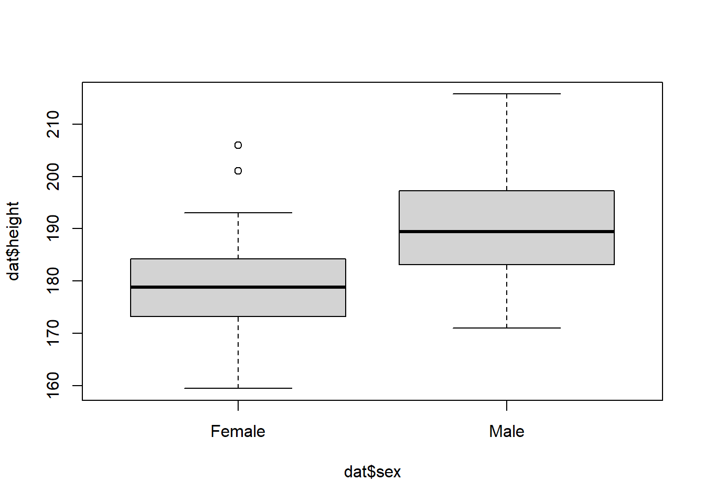

# Look up 'sample' to understand what this does
sex = sample(c("Male", "Female"), size=100, replace=TRUE)
# What does this line do?
height = rnorm(n=100,
mean=180 + 10* (sex=="Male"),
sd=10)
# We have two vectors of the same length so we can combine them into a data frame.
dat = data.frame(height,sex)Descriptive tables using base R, data.table and tidyverse
Limitations of “base” R
With only base R (that is, R without add on packages) it can be unexpectedly difficult to perform some simple tasks.
A good example is making a table of summary statistics. This is difficult with base R but is simple with using function from add-on packages.
Here I illustrate this using two widely used systems for data manipulation in R, namely data.table and tidyverse. Both can be used to make summary tables of descriptive statistics. that can be exported
Finally I describe a package, gtsummary that is specifically designed for creation of publication ready summary tables.
Mean of one variable stratified by another
Suppose we have a dataset of the heights (in cm) of 100 men and women, and we want to make a descriptive table of means, standard deviations and counts by sex.
First let’s make a fake dataset. We’ll assume women have an average height of 170cm, men of 180cm with both groups normally distributed with a standard deviation of 10.
Now lets quickly check the data using a plot to make sure it looks as we would expect.
head(dat) height sex
1 193.8483 Male
2 167.3677 Male
3 204.0349 Male
4 160.2324 Female
5 184.0695 Female
6 192.0917 Femaleboxplot(dat$height~dat$sex)
The base R way to get summary statistics
The aggregate function can be used to calculate a single statistic over groups as follows:
aggregate( height ~ sex , FUN=mean, data=dat) sex height
1 Female 178.5172
2 Male 188.0611Alternatively we could use tapply:
tapply( dat$height, dat$sex , FUN=mean ) Female Male
178.5172 188.0611 While this works in this simple case it is difficult to get a more complicated table. For example, there is no obvious way to get a table of means, standard deviations and counts (the standard table 1 in any biomedical paper) without using an external package.
I’ll illustrate three different approaches of here. First, data.table and tidyverse add ways to manage and manipulate data
It is likely that if you spend a lot of time using R you should learn to use one or other (or both) of these systems.
Then I’ll illustrate gtsummary, a package specifically designed to make tabulation of results easier.
Using data.table
The data.table package gives us a very flexible way to perform fast grouped operations on datasets. A data.table is an enhanced version of a data.frame, and the main function of data.table an extension to the [ ] operator (square brackets) that is much more powerful than the default R version.
First we need to load the package, then turn the data.frame into a data.table using setDT.
library(data.table) # Load the packageWarning: package 'data.table' was built under R version 4.1.3setDT(dat) # Turn our "data frame" 'dat' into a "data table"Now we can use the extended square bracket syntax to create our table.
First the simple comparison of means:
dat[ , mean(height), by=sex ] sex V1
1: Male 188.0611
2: Female 178.5172Next, adding the counts and standard deviations:
dat[ , .(Count=.N, Mean=mean(height),SD=sd(height)), by=sex] sex Count Mean SD
1: Male 47 188.0611 10.83668
2: Female 53 178.5172 10.39541Breaking down the data.table syntax
The [ operator in data.table has three arguments. In short, we express a command on a dataset (here called dat) by specifying:
dat[ which rows to use , what to do , which columns to group on ]In the first version of the command above we left the first entry blank (so used all the rows), placed mean(height) in the second position and specified by=sex in the third. In the second version we expanded the second argument to return a list of elements, and gave them new names.
For more details of using data.table, see: https://cran.r-project.org/web/packages/data.table/vignettes/datatable-intro.html
The tidyverse way
tidyverse is a set of R packages that provide many functions for data manipulation and programming. In particular the dplyr library includes functions for data manipulation and summarisation. To use these we can load the dplyr library:
library(dplyr)Warning: package 'dplyr' was built under R version 4.1.3
Attaching package: 'dplyr'The following objects are masked from 'package:data.table':
between, first, lastThe following objects are masked from 'package:stats':
filter, lagThe following objects are masked from 'package:base':
intersect, setdiff, setequal, unionThen get our results table the tidyverse way:
First just the means
dat %>% group_by(sex) %>% summarise(mean(height))# A tibble: 2 x 2
sex `mean(height)`
<chr> <dbl>
1 Female 179.
2 Male 188.Now with the counts and standard deviations:
dat %>% group_by(sex) %>% summarise(N=n(),mean(height), sd(height))# A tibble: 2 x 4
sex N `mean(height)` `sd(height)`
<chr> <int> <dbl> <dbl>
1 Female 53 179. 10.4
2 Male 47 188. 10.8The tidyverse (dplyr) syntax
dplyr introduces six main functions for manipulating and summarising data, these are mutate, arrange, select, filter, summarise, and group_by. Using combinations of these functions you can perform most simple data operations. Functions are chained together using the pipe operator %>% which passes the output from one into the next.
So the first command above reads something like: “take dat, then group it by sex, then for each group return the summary statistics we specified”.
Visit https://www.tidyverse.org/learn for more.
Using gtsummary
Finally to illustrate a package meant specifically for nicely formatted data tabulations, the tbl_summary function from the gtsummary package can create tables of descriptives. gtsummary is built on the gt package, a part of the tidyverse which provides visual formatting for tables, analogous to ggplot2 for graphs.
library(gtsummary)
tbl_summary(dat, by=sex, statistic=list(height~"{mean} ({sd})"))| Characteristic | Female, N = 531 | Male, N = 471 |
|---|---|---|
| height | 179 (10) | 188 (11) |
| 1 Mean (SD) | ||
This is a little different to the other approaches, because it produces a publication ready output rather than a dataset for further processing as do
https://www.rdocumentation.org/packages/gtsummary/versions/1.6.3
Which to use?
data.table and tidyverse perform a lot of the same tasks in improving the R experience. You will probably choose to mainly use one or the other (or to mostly stick with base R), but it will help to be familiar with both if you want to understand and reuse code written by others.
If you search tidyverse vs data.table online you will find a lot of differing opinions as to which to use. More people learn tidyverse now, possibly because it has a lot of resources put into its development and promotion.
Personally I like the data.table syntax better so I tend to use this, borrowing from tidyverse packages when I need to. I find that the more confident I get with it, the more data.table features I use, which I think improves my code.
The gt system for making nice tables is popular with people making reports and is well integrated into the tidyverse ecosystem.
Further reading
This website https://wetlandscapes.com/blog/a-comparison-of-r-dialects/ shows the syntax for data.table, tidyverse and ‘base’ R to perfrom lots of different data processing operations.